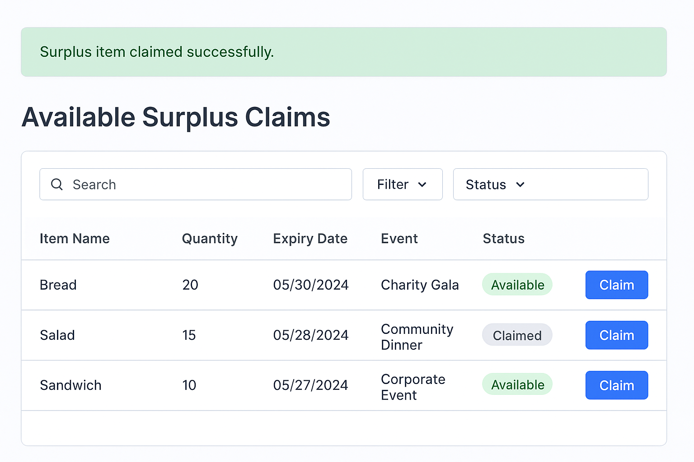
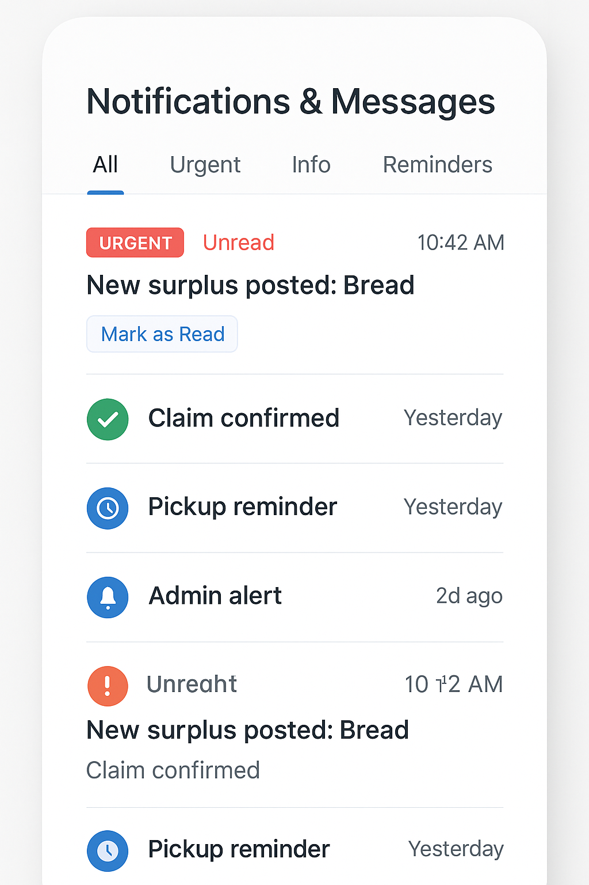
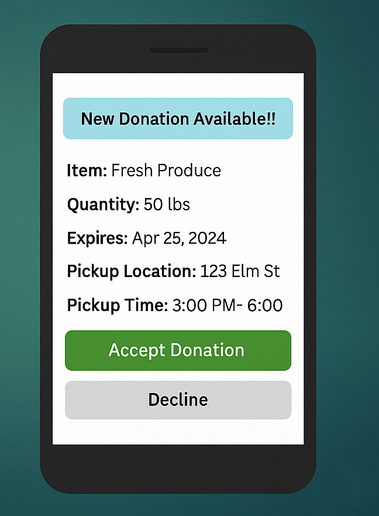

UI Screens
Application Screenshots
A look at the key screens built for the system prototype.

Login Page
Secure entry point for all user roles — event organizers, charities, and admins.

Main Dashboard
Central hub showing events (12), donations (38), and pickups (65) at a glance.

Admin Dashboard
Admin view with new donations, pending pickups, and total donation counters.

Post Surplus Item
Mobile form for event organizers to list leftover items with active inventory table.

Available Surplus Claims
Charity view of claimable items with search, filter, status badges, and claim button.

Notifications & Messages
Tabbed notification center with urgent alerts, claim confirmations, and pickup reminders.

Donation Accept Screen
Mobile push notification with item details, pickup location, and accept / decline actions.